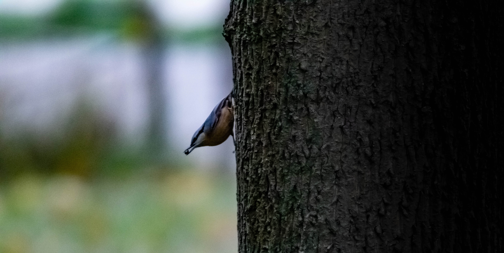
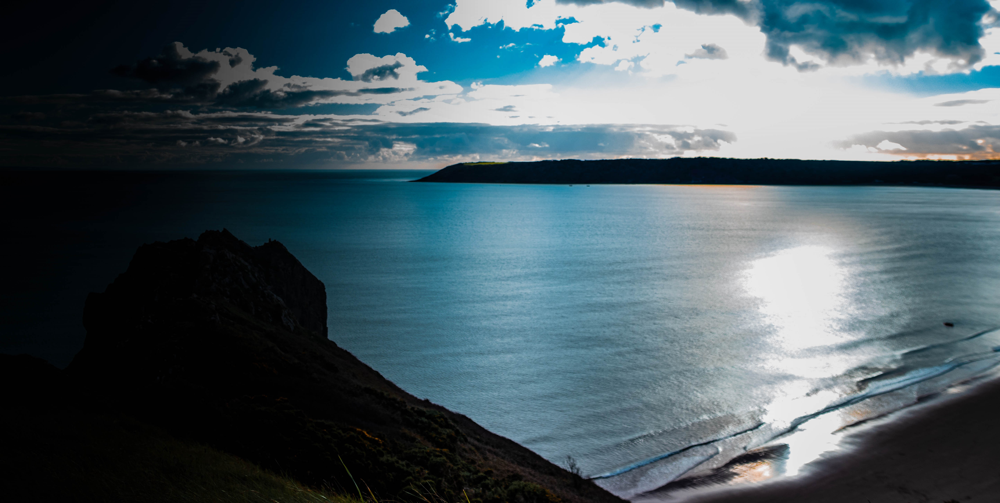

Je suis Shayane Katchera, amateur dans la photographie animalière et de paysage. Ma passion a commencé à l’adolescence, quand on me disait que je savais bien prendre les photos. Lors d'une randonnée en région parisienne, j’ai tenté de photographier un oiseau qui chantait à quelques mètres de moi. Depuis, je me suis prise de passion pour les oiseaux et les paysages variés. Mon objectif est de capturer le plus d’espèces et de décors différents.
Si l'intégration ne fonctionne pas, cliquez ici pour voir mon compte.
Pour toute question ou collaboration, vous pouvez me contacter via Instagram.